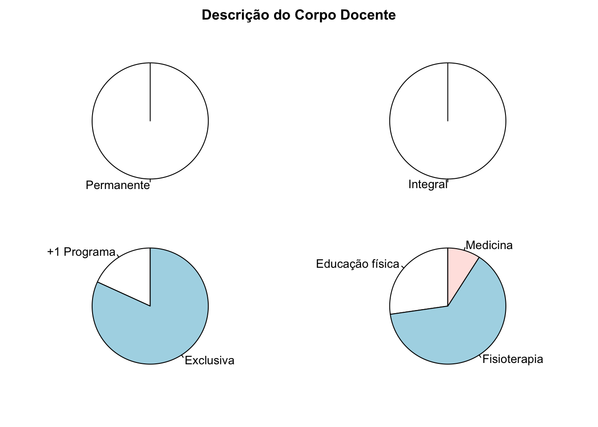
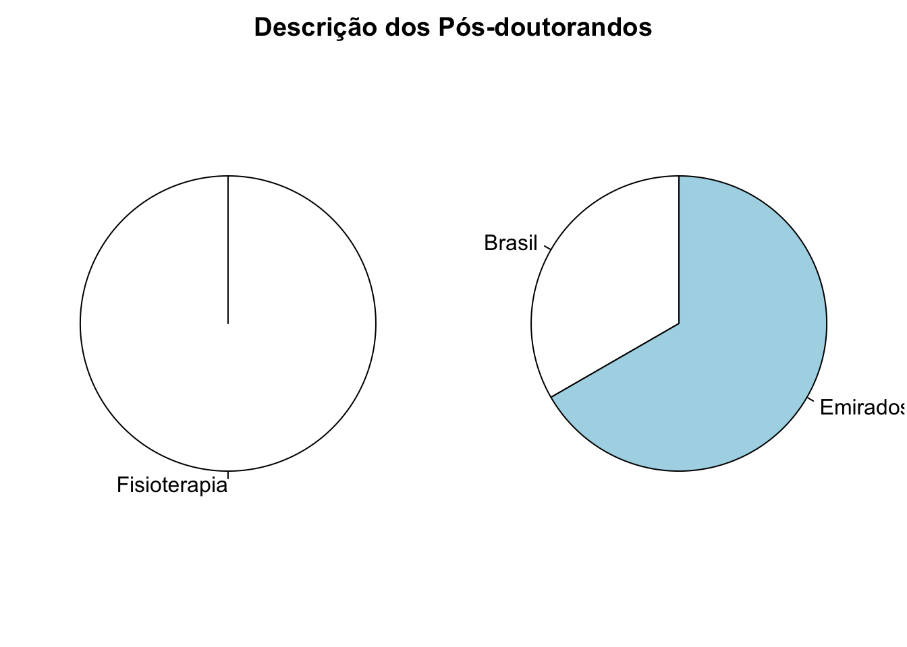

Pessoas
Docentes
Histórico de docentes credenciados

Pós-doutorado
Histórico de Pós-Doutorandos credenciados
| País | Nome | Categoria (ano) | Lates ID | ORCID | Scopus Author ID | ResearcherID |
|---|---|---|---|---|---|---|
| 🇧🇷 | Luciana Crepaldi Lunkes | Pós-Doc (Voluntário) (2020-Atual) | 0179071341919459 | 0000-0002-4314-4931 | 47761183400 | AAL-4088-2021 |
| 🇦🇪 | Praveen Kumar Kandakurti | Pós-Doc (Voluntário) (2021-Atual) | - | 0000-0003-2669-4488 | 57216791576 | - |
| 🇦🇪 | Sampath Kumar Amaravadi | Pós-Doc (Voluntário) (2021-Atual) | - | 0000-0002-4744-0180 | 57191586401 | - |



Tweet
Copyright © 2021 Arthur de Sá Ferreira, PhD, em nome do colegiado do PPGCR-UNISUAM. Todos os direitos reservados. Última atualização em 13 Maio 2021.
Arthur de Sá Ferreira is creating websites for sharing science & art.
If you enjoyed this content you can buy me a ☕ coffee!